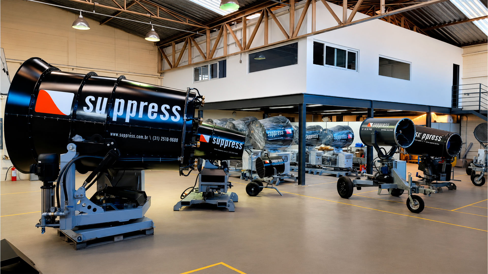

Sobre a Suppress
Desde 2014, desenvolvemos tecnologia para transformar o controle de poeira em vantagem competitiva.
Uma empresa criada para resolver um problema real
A Suppress Tecnologia e Sustentabilidade importa, fabrica e fornece equipamentos que viabilizam processos sustentáveis em obras de construção, reformas (em locais confinados ou não), demolições, minerações, siderúrgicas, portos e pátios de granéis e indústrias em geral.
A Suppress iniciou suas atividades em 2014 contando com profissionais com décadas de experiência nos setores de mineração, demolição e construção pesada. Pessoas com vivência internacional que, não tendo a resposta imediata para solucionar os problemas do cliente, certamente saberão onde buscá-la de forma eficiente e rápida.

Uma década de inovação em controle de poeira
Início das atividades
Início das atividades com a importação de canhões de névoa da fabricante sueca Duztech.
Expansão da estrutura
Expansão da estrutura e mudança para um espaço maior, preparando o caminho para a produção própria.
Criação do Setor de Engenharia
Criação do Setor de Engenharia, marco fundamental para o desenvolvimento de tecnologia própria.
Fabricação 100% nacional
Início da fabricação 100% nacional, com engenharia e produção adaptadas à realidade brasileira.
Licença exclusiva e lançamento do SP-150
Aquisição oficial da licença da Duztech, consolidando a Suppress como fabricante autorizada e exclusiva no Brasil. Lançamento do Super Canhão de Névoa SP-150, ideal para grandes operações de supressão.
Linha de Alta Vazão para evaporação
Introdução da linha de Canhões de Alta Vazão para evaporação: SP-65e e SP-150e.
+100 equipamentos comercializados
Superamos a marca de 100 equipamentos comercializados no Brasil.
Autoativação, Nimbus e projeto semi-autônomo
Lançamento do sistema de autoativação através de dados meteorológicos. Lançamento do Nimbus, canhão de névoa voltado para construção civil. Lançamento do projeto semi-autônomo completo, integrando inovação, automação e sustentabilidade.
Missão
Desenvolver e fornecer tecnologia para operações sustentáveis, redução de impactos e melhoria de ambientes laborais e de lazer.
Valores
Visão
Ser reconhecida como empresa de vanguarda em sustentabilidade e redução de impactos ambientais e como o melhor fornecedor de canhões de névoa para supressão de poeira do mercado.
Crenças
Fazer muito mais com menos recursos. Explorar os recursos naturais maximizando seu potencial e minimizando os impactos gerados. A tecnologia tem papel fundamental neste processo.
Resultados que comprovam nossa liderança
Certificações e normas atendidas
Nossas soluções são projetadas em conformidade com as principais normas ambientais e trabalhistas brasileiras.
NR-10
Segurança em Instalações e Serviços em Eletricidade — equipamentos projetados em conformidade com requisitos elétricos.
NR-12
Segurança no Trabalho em Máquinas e Equipamentos — proteção, sinalização e dispositivos de segurança.
Fale com um especialista da Suppress
Nossa equipe técnica está pronta para entender o seu desafio de poeira e apresentar a solução ideal para a sua operação.